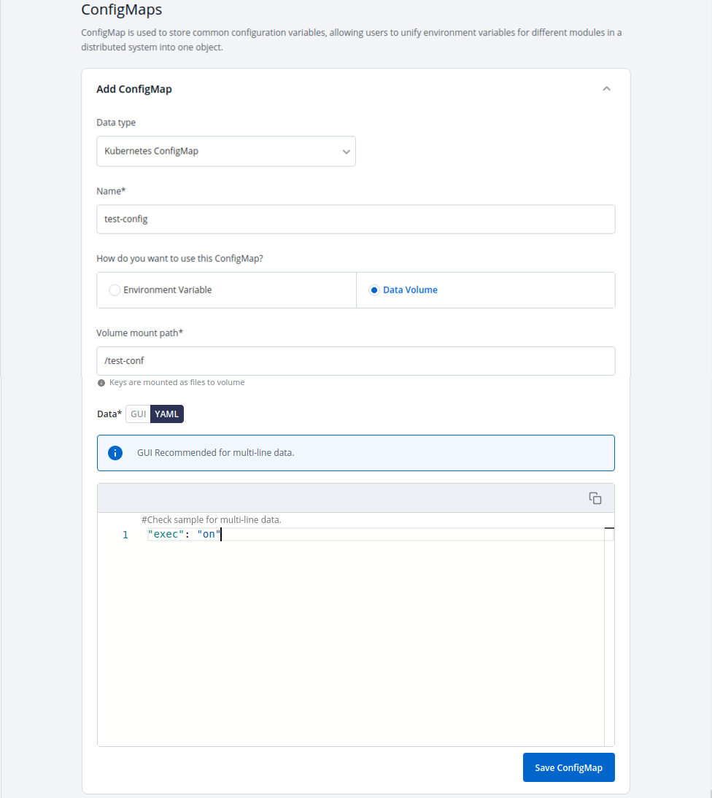

ConfigMaps
The ConfigMap API resource holds key-value pairs of configuration data that can be consumed in pods or used to store configuration data for system components such as controllers. ConfigMap is similar to Secrets, but designed to more conveniently support working with strings that do not contain sensitive information.
Click on Add ConfigMap to add a config map to your application.

Configure the ConfigMap

| Key | Description |
|---|---|
Data Type(Kubernetes ConfigMap) |
ConfigMap that is created by Devtron. |
Name |
Name of ConfigMap. |
Environment Variable |
Select if there are Environment Variables to be injected in pods. |
Data Volume |
Specify, if there is a volume that is accessible to Containers running in a pod needs to be added. |
Key |
Key. |
Value |
Value for a given key. |
You can Click on “YAML” or “GUI” to view the key and Value parameters of the ConfigMap that you have created.
Volume Mount Path
Specify Volume Mount folder path in Volume Mount Path, path where the data volume needs to be mounted, which will be accessible to the Containers running in a pod.
You can Select the Data Type as Kubernetes ConfigMap if you wish to use the ConfigMap created by Devtron or Kubernetes External ConfigMap if you have created a ConfigMap using Kubectl command.

Click Save ConfigMap to save the configMap.
Kubernetes External ConfigMap
Kubernetes External ConfigMap is created using kubectl create configmap or you can use ConfigMap generator in kustomization.yaml to create a ConfigMap.
If you are using Kubernetes External ConfigMap make sure you give the name of ConfigMap same as the name that you have given using kubectl create Configmap <configmap-name> <data source> command, otherwise it might result in error during the built.
You have to ensure that the External ConfigMap exists and is made available to the pod.
The config map is created.